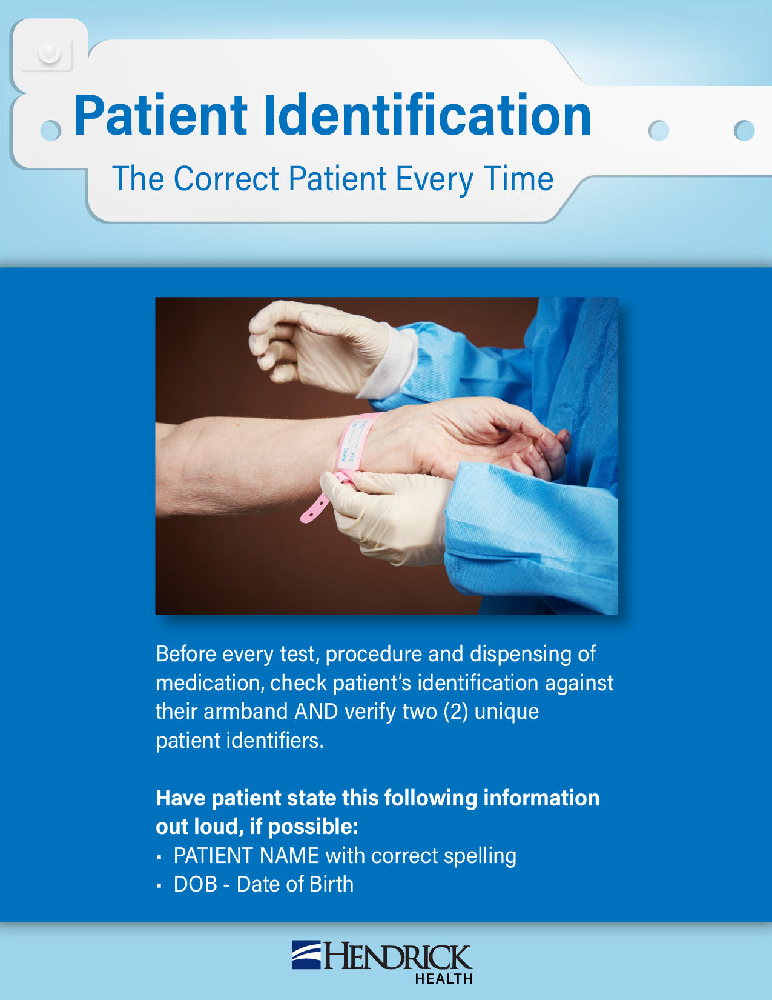

Zoo Day for Kids
.png)
.png)
This was an activity for children of Hendrick Health employees visiting the Zoo. This graphic was built in Adobe Illustrator.
Heart Attack Symptoms Flyer


This was a flyer made in both English and Spanish for patients experiencing these symptoms. The flyer was made in Adobe Illustrator.
Research Center Brochure
.png)
.png)
This was a brochure made for the research center at Hendrick Health. The flyer was made in Adobe Illustrator.
Patient Identification Flyer

This was an announcement for employees at Hendrick Health for how to correctly identify a patient. This graphic was built in Adobe Illustrator.
Nurses Week Announcement

This was an announcement for employees at Hendrick Health for a week of recognition for nurses. This graphic was built in Adobe Illustrator and made in several sizes for phones, newsletter, and computer and TV screens.
Nurses Week Announcement

This was an advertisement for the Mother's Day Gift Sale at the gift shop at Hendrick Health. This graphic was built in Adobe Illustrator and made in several sizes for phones, newsletter, and computer and TV screens.
Breast Cancer Card

This was a card for patients who are or have experienced Breast Cancer at Hendrick Health. It was a gift to the patients from the clinics in a form of a printed card. This was created in Adobe Illustrator.
Fall Sale Advertisement

This was an announcement for employees at Hendrick Health for the fall sale. This graphic was built in Adobe Illustrator and made in several sizes for phones, newsletter, and computer and TV screens.
P.E.T. Cards
.png)
.png)
This was a project for the Pet Enhanced Therapy Services at Hendrick Health. It was a group of six baseball cards created for patients to collect. It was designed in Illustrator.
Workforce Development Card
.jpg)
This was a card for employees as a congratulatory card to give them. It was created in Illustrator.
Workforce Development Card

This was a yearly reminder for what is expected appearance wise for the employees. It was created in Illustrator.
P.E.T. Cards


This was a project for an employee engagement survey. It was designed in Illustrator.
Hendrick Health Mission and Ministry Announcements

.png)
This was designed for the missions and ministry department at Hendrick Health. It was designed in Illustrator.